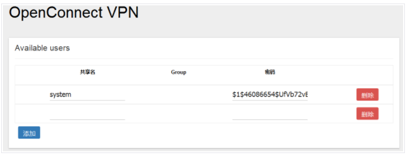
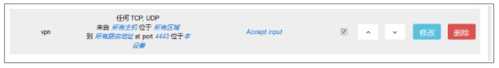
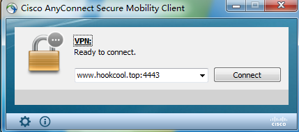
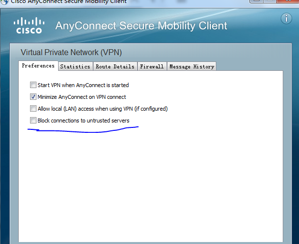

OpenWrt搭建OpenConnect VPN
1、安装Ocserv
1 | opkg update |
安装完成，重启之后luci的服务界面就会出现“OpenConnect VPN”选项
2、配置Server端
可以通过luci界面配置，比较直观和容易。
  通过“服务”–“OpenConnect VPN”，进到“服务器设置”的“常规设置”，相关参数如下：
- Enable Server: 打钩表示启动服务
- User Authentication: 用户认证方式，选择plain，表示使用OpenWrt路由器上面定义的用户名和密码登录VPN
- Firewall Zone： 选择lan
- 端口：默认是443，可以修改为其他端口
- 最大连接数：默认为8，这里的值是设定有多少个VPN可以连进来
- Max same Clients：默认为2，这里的值会限定同一个账号能够登录几次
- Enable compression：打勾表示启用压缩
- Enable UDP：打勾表示启用UDP协议
- AnyConnect client compatibility：打勾表示允许Cisco的AnyConnect client作为VPN客户端软件连接。
- VPN IPv4-Network-Address：这里定义的是VPN客户端连到内网之后，获得的IP地址的网段范围。
- VPN-IPv4-Netmask：这里定义的是VPN客户端连到内网之后子网掩码范围
客户端获取IP地址，有两种设置方法：
- VPN网段和OpenWrt所在的网段不同，用这种方法要在OpenWrt路由表里面添加2个路由网段。
例如：OpenWrt的路由器IP地址为：192.168.111.1 子网掩码：255.255.255.0
VPN的地址可以设置为：192.168.112.0 子网掩码：255.255.255.0 - VPN网段和OpenWrt所在的网段一样（使用其中某一段子网IP地址），这种情况下路由表里的路由只需要添加一个，但是启用所有接口上的ARP代理功能
例如：OpenWrt的路由器IP地址为192.168.111.1 子网掩码255.255.255.0
VPN的地址可以设置为：192.168.111.16 子网掩码255.255.255.240
（这里192.168.111.16/28其实是一个网络号，VPN服务器将会使用第一个地址，即192.168.111.17/29，VPN客户端将使用剩余的其中一个地址18-30，这里的参都配置可以供13个客户端使用。OpenWrt所在的网络的DHCP分配的地址要排除这段里面的IP不配给客户端16-31，防止IP地址冲突）
3、配置DNS SERVER
VPN线路连接成功之后，因为默认的模式“分离隧道”，所以客户羰的DNS SERVER将会被这里的配置所覆盖。一般情况下，家的的OpenWrt路由器也承担DNS功能，所以这里设置为OpenWrt的路由器地址即可。
4、配置路由表
这里的设置的路由表，将会分配给VPN客户端，告知VPN客户端，通过VPN线路访问这里定义的路由。一般情况下，这里只需要添加“VPN的IP网段”和“OpenWrt所在的网段”。
  具体说明，参看上面配雷超VPN IPv4-Network-Address和VPN IPv4-Netmask的两种情况，分别定义的路由表为：
1 | # 方法一对应的路由表为 |
- 如果这里不填写任意网段，VPN Client将使用Tunnel all Traffice模式，即设置客户端所有的流量发往OpenWrt，即新增一条默认路由到OpenWrt访问所有网络。
- 如果填写网段，VPN Client将使用split tunnel的分离隧道模式，只有指定的网段流量才通过VPN防问流向OpenWrt
5、配置拨号用户
当配置了用户认证方法为“plain”，并启用了OpenConnect服务之后，就可以新建用户了。新建用户很简单，只需要义用户名和密码即可。
  在“服务”–“OpenConnect VPN”–“用户设置”–“Available users”

6、配置防火墙，允许从WAN访问VPN端口
前面定义的端口为4433，并且允许tcp和udp两种模式，所以这两个端口都需要允许。可以通过如下命令和luci进行配置：
1 | config rule |
luci的配置为：网络–防火墙–通信规则：

此时，VPN可以正常连接进来了，如果只需要连进来配置OpenWrt路由器，到这里已经可以了。但是如果要访问其他的内网资源，就需要以下配置。
7、配置自定义防火墙，允许VPN的流量访问内网资源
通过命令行，编辑/etc/firewall.user，添加如下内容：
1 | iptables -A input_rule -i vpns+ -j ACCEPT |
配置完毕之后需要重启防火墙生效。
1 | /etc/init.d/firewall restart |
8、启用代理ARP
如果VPN网段和OpenWrt网段处于不同的IP网段，无需开启代理ARP。但是VPN网段和OpenWrt设置为同一网段IP的情况下，虽然我们从IP的角度看，我们客户端的VPN IP网段和资源网段处于同一网段，应该可以直接访问。但实际下面，有一个虚拟的VPN接口，这两个是不则的网段，所以路由其实是不可达的。所以必须启用代理ARP功能，以供VPN IP网段和资源网段可以进行互通。通过ssh登陆OpenWrt路由器，用vi编辑器/etc/sysctl.conf新增如下命令：
1 | net.ipv4.conf.all.proxy_arp=1 |
然后重新加载配置，用下述命令：
1 | sysctl -p |
代理ARP是有诸多风险，建议大家还是用不同的网段配置VPN IP与openwrt网段
这样，open Connect VPN的服务器端就已经配置成功了。
9、Windows PC连接VPN方法
客户端使用Cisco AnyConnect

安装完毕之后，因为我们的域名或是IP是不是CA信任的，所以必须要取消客户端对不信任的服务器的连接。点击械下角的齿轮，按照下图提示，取消打勾

然后就可以输入IP加端口进行连接了，连接成功之后，有个不信任的提示，点击“Connect Anyway”继续；输入用户名和密码，有了banner提示点击“Accept”接收，最后再一次弹出不信任服务器的是示，点击“Connect Anyway”，即可连接成功。